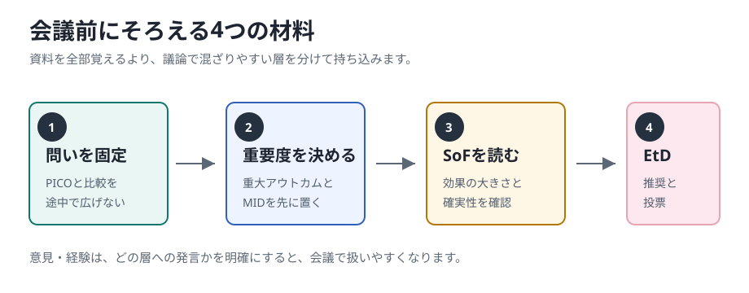

レビュー前
問いと物差しを決める
優先する問い、比較、重大なアウトカム、重要な差の目安、COIの扱いを決めます。
GRADEアプローチによる最終パネル会議の事前学習
研究結果の要約や判断表を「患者にとって何が起きるか」に翻訳し、 推奨の方向と強さに納得して一票を入れるための実践資料です。会議で決まらない時の進め方まで、最初から見通せるようにします。
スマホでも読みやすく調整してありますので、ぜひ、スマホで隙間時間に読んでおいてください。
最初にここから
この教材は、動画で全体像をつかんでから読むと理解しやすくなります。 先に動画を見ることで、「なぜ推奨文に投票するのか」「どこで迷いやすいのか」「資料の数字をどう判断に結びつけるのか」が見えやすくなります。
メイン教材とは別の、7段階の実務チェックリスト
会議前に、自分の出番を確認 今、どの資料を読み、何を判断・投票するのか 会議案内から外部査読後までを7段階に分け、各時期の「読む資料」「判断・投票」「残すもの」だけを一覧で確認できます。 自分の出番を確認する研究結果の要約表、人数差、研究ごとの結果の図、判断表（EtD表）を、図と具体例で順に学びます。
全体像
最終会議では、研究結果そのものに投票するのではありません。研究をまとめた資料と判断表をもとに作られた推奨草案を読み、 「この判断は患者にとって納得できるか」を検討して投票します。結論がその場でまとまらない時は、論点を残して後日のWeb会議やアンケートで続けます。

図から読み方を取り戻す
最初から全部を暗記する必要はありません。要約表で全体を見て、人数差へ戻り、研究ごとの図で幅を確かめ、最後に判断表へ進みます。 図と文章を往復することが、推奨草案を自分の言葉で説明する近道です。
この地図を前後に広げる
詳細ページでは、システマティックレビューを始める前の問い・アウトカム・重要な差の決定から、 最終会議で推奨の方向・強さ・日本語の文章を完成させるところまでを時系列で確認できます。
レビュー前
優先する問い、比較、重大なアウトカム、重要な差の目安、COIの扱いを決めます。
レビュー後
基準となる人数、相対効果、人数差、結果の幅、重要な差、確実性を確認します。
最終会議
判断表を一項目ずつ確定し、方向、強さ、推奨文、注意書き、実装上の配慮を決めます。
会議の実際
パネル会議は、誰かの印象で一気に結論を決める場ではありません。司会が議論の順番を保ち、方法担当者が研究結果と判断表を説明し、 パネリストがそれぞれの立場から「この推奨文で読者が困らないか」を確認していきます。
誰が投票できるか、利益相反がある場合の扱い、合意に至らない時の扱いを先に確認します。
会議中に対象者や比較を広げすぎると、資料の数字と推奨文がずれます。まず今回の問いを固定します。
望ましい効果、望ましくない効果、確実性、価値観、資源、公平性、実行可能性を順に確認します。
方向と強さだけでなく、対象、条件、注意書き、説明文が判断表の理由と合っているかを確認します。
実際に参加した人の声
実際の作成会議へ参加した人の投稿には、数週間の準備、数日にわたる会議、一行ずつの確認、理解が進行に追いつかない瞬間まで書かれています。 初参加で戸惑うこと自体は珍しくありません。ただし、準備をしなくてよいという意味でもありません。何を先に読み、分からない点をどこへ戻すかを知ることが大切です。
成人1型糖尿病のインスリン使用に関するWHO会議。世界18人で4日間、推奨ごとに公平性、実行可能性、受け入れやすさまで検討したと報告しています。
“Every recommendation is examined line by line.”
推奨は一文ずつ、レビューに照らして確かめます。初参加の感想は “brain-draining for me as a first-timer”でした。 その場で答えを思いつく力より、資料へ戻り、理由を言葉にする力が必要だと分かります。
LinkedInの原投稿を読む認知機能低下・認知症リスク低減のWHO会議。事前に数週間かけてWHOハンドブックとGRADEを読み、強い推奨や推奨文の言葉を学んだと記しています。
“a long commitment of time, effort and mental and physical stamina”
会議中に情報処理が追いつかず、少し前の論点へ発言したことも率直に書いています。 周囲の忍耐と支援によって意味のある貢献ができたという経験は、初参加者が「分からない」を隠さなくてよいことを示しています。
LinkedInの原投稿を読むうつ病の予防・管理に関するICMR会議。約40人の多職種が対面とオンラインで参加し、WHOとGRADEの方法に沿って議論したと紹介しています。
“scientific, systematic, robust and inclusive”
多職種で作ることは、結論を出すだけでなく、参加者がレビュー、エビデンス統合、確実性評価を学ぶ機会にもなると述べています。 会議は、詳しい人だけが話す場ではありません。
LinkedInの原投稿を読む英国の避妊法に関する臨床指針UKMEC 2025の作成に参加し、公開前の仕事は数日ではなく、実際には数週間から数か月だったと振り返っています。
“busy few days (actually weeks/months)”
慣れた範囲を越える仕事だった一方、最新のエビデンスが臨床指針になる過程は大きな達成感があったと記しています。 会議当日だけで完成する仕事ではないことが伝わります。
LinkedInの原投稿を読む糖尿病による苦痛に関するガイドライン作成へ、生活経験のあるパネリストとして参加した際のインタビューです。
“it’s not a theoretical exercise”
理論だけで終わらず、実施でき、生活に実際の違いを生む指針でなければならないと話しています。 推奨文の読みやすさ、実行可能性、日常生活への影響を確認することも、パネルの重要な仕事です。
EASD公式投稿と本人インタビューを読む問い、要約表、判断表、推奨の言葉を、順番に学びます。
理解が遅れたら、論点と資料の場所を確認してから発言します。
数週間から数か月かけて、臨床で使える形へ仕上げます。
原著研究で確認されたこと
本人の投稿だけで一般化せず、実際のパネルや会議シミュレーションを調べた原著研究も確認します。
十分に読む時間、準備された議長・方法担当者、事前説明会が重要でした。多くの参加者は資料を事前に読んでおらず、後からもっと準備すればよかったと答えました。
Glentonらの原著研究を読む価値観と選好を考える構造化アンケートは、多くのパネリストに理解しやすく、利益・害・負担の比較や推奨の強さを考える助けになりました。ただし、実際の価値観研究を置き換えるものではありません。
Zengらの原著研究を読むWHO・GRADEの一次資料から
以下は、一つの論文に並んだ「心得」の直訳ではありません。WHOの公式手順、Gordon Guyatt先生らによるCore GRADE、 GRADEの判断表とCOI管理の一次資料を、会議中に実行できる行動へ再構成したものです。
対象者、介入、比較、アウトカムが今回の資料と一致しているかを最初に確認します。重要でも評価していない治療は、今回の推奨へ急に加えません。
統計学的な差の有無は入口です。最もありそうな効果、信頼区間の両端、患者にとって重要な大きさかを読みます。
相対危険度だけでは、患者に起きる差は決まりません。標準治療で何人に起きるかを確かめ、100人または1000人中の群間差で説明します。
確立したMIDがあれば使い、なければ意思決定の閾値を明示します。点推定値と信頼区間が、その物差しを超えるかを見ます。
確実性は効果推定値への確信です。推奨の強さは、利益、害、負担、価値観などを合わせた判断です。二つは関連しますが同じものではありません。
死亡や症状だけでなく、重い有害事象、治療中止、通院、費用、生活上の負担を並べ、どのアウトカムが推奨を動かしたかを示します。
「自分なら選ぶ」から一歩離れます。どんな人が利益を重く見て、どんな人が害や負担を重く見るのか、選択が分かれる理由を言葉にします。
経験は価値観、受け入れやすさ、実行可能性、見落とした害を知る手掛かりです。ただし、システマティックレビューの効果推定を置き換えません。
金銭的・非金銭的COIは、問いの設定、比較、解釈、推奨へ影響し得ます。発言、判断、投票への参加方法を事前に決め、必要なら制限します。
どの判断項目が方向と強さを決めたか、どこに不確実性や反対理由が残ったかを記録します。透明性は、全員一致を演出することではありません。
「今の論点は、判断表のどの項目に関係しますか」
「標準治療と比べて、1000人中何人の差ですか」
「その差を重要と考える物差しと、確実性はどうなっていますか」
個人が作成した解説や二次的なまとめではなく、WHO公式文書、GRADE Working Groupの原著、実際のガイドライン方法報告を用いています。
会議での発言
パネル会議では、専門家の経験も大切な材料になります。ただし、「A治療が良いと思います」「A治療は成功すると思います」だけでは、 推奨を支える根拠にはなりにくい発言です。経験を出すときは、観察した事実、そこからの解釈、価値判断を分けて話します。
「A治療は良いです」「A治療なら成功すると思います」「私はA治療を行ってもらい成功しました」
これだけでは、何人に、どのような患者に、何と比べて、どのアウトカムが改善したのかが分かりません。
「同じ条件に近い100人にA治療を行い、20人で症状が改善しました。」「私はA治療を行ってもらうにあたって、●●を判断にしました。」「私はA治療を行ってもらったら、●●の症状がでました。」
観察した人数、対象、結果、限界を一緒に述べると、会議で検討できる材料になります。 一般の立場で参加する方は、治療を選択した価値観や生活上の負担を述べるとよいでしょう。
会議前の準備
資料を読んで分からない箇所があるのは自然なことです。大切なのは、まったく分からないまま会議に参加しないことです。少しわからないのは、当日に質問しましょう。 会議前に質問を送っておくと、当日は推奨の方向と強さの議論に集中できます。

PICO、対象者、比較する治療を確認します。会議中に比較が変わると、SoF表の数字と推奨文がずれます。
どのアウトカムが推奨判断に効くか、どのくらいの差なら臨床的に重要かを先に置きます。
ランキングや印象だけで決めず、ペアワイズの効果推定、確実性、価値観、実行可能性を合わせて投票します。
最初に変える読み方
研究結果を読むとき、つい「有意差がある」「有意差がない」という二択で考えたくなります。 しかし、診療ガイドラインの投票では、二択だけでは不十分です。 どのくらい良さそうか、どのくらい悪く見える可能性があるか、その幅を見て判断します。
「統計学的に差があるから採用」「差がはっきりしないから効果なし」
P値という数字で、この二択を判断している資料もあります。ただし、P値は効果の大きさや患者にとっての重要性を直接示すものではありません。
「最もありそうな効果はどれくらいか。小さく見積もるとどこまで小さいか。悪い側に振れると害まであり得るか」
この幅を示す数字を、信頼区間と呼びます。名前は難しいですが、「結果のゆれ幅」と考えると読みやすくなります。
望ましくないアウトカムで、標準治療では1000人中100人に起きるとします。 新治療の最もありそうな読みでは1000人中80人、結果の幅は1000人中60人から105人までだとします。
| 読み取る値 | 人数に直す | 意味 |
|---|---|---|
| 最もありそうな値 | 1000人中80人 | 標準治療より20人少ない |
| 良い側の端 | 1000人中60人 | 標準治療より40人少ない可能性がある |
| 悪い側の端 | 1000人中105人 | 標準治療より5人多い可能性もある |
つまり、「最もありそうなのは1000人中20人の減少。ただし、あり得る範囲は40人減少から5人増加まで」と読みます。 ここまで読んでから、患者にとって十分大きい差か、害の可能性をどう扱うかを議論します。
Step 1
推奨は「何をすべきか」に答える文です。会議資料では、この問いをCQ、問いの中身をPICOと呼ぶことがあります。 名前は難しく見えますが、意味はシンプルです。「誰に」「何を」「何と比べて」「何を良い結果と考えるか」をそろえるためのメモです。 ここがずれると、後の要約表や判断表が正しくても、投票対象がぼやけます。
Step 2
会議資料では、この表をSoF表と呼ぶことがあります。これは「Summary of Findings」の略で、研究結果を投票用に短くまとめた表です。 ここでは「効果があるか、ないか」を探すのではなく、 対照群と介入群の差が、患者にとってどのくらい大きく、どのくらい確かかを読みます。

医療関係者の中には、システマティックレビューで採用された元論文まで読んで会議に臨んでくださる方がいます。 これはパネル全体にとって大変ありがたい準備です。
ただし、元論文で見つけた問題点は、今回のエビデンスの確実性や効果推定にどの程度影響するかを分けて扱います。 確実性を大きく変える指摘なら修正が必要ですが、重要な気づきであっても全体の判断への影響が小さい場合は、その論点だけに議論が集中しすぎないよう注意します。
特に、採用論文が1〜2本と少ないときに「この論文は除外すべきではないか」という議論になると、エビデンスなしとして議論が止まることがあります。 可能な限り、会議前に事務局や方法担当者へ共有し、当日は「全体の推奨判断に影響するか」を確認しながら扱いましょう。
要約表の最重要ポイント
要約表の「1000人あたり4人少ない」は、「1000人中4人だけが成功する」という意味ではありません。 多くの場合、対照群、つまり標準治療や従来の治療を受けた場合と比べて、新しい介入によりアウトカムが4人分少ない、または多いという意味です。
「新治療を受けると1000人中4人しか成功しない」
これは誤りです。要約表の人数差は、通常「比較した差」を表します。
「標準治療では1000人中40人に入院が起きる。新治療では1000人中36人に入院が起きる。差は1000人中4人少ない」
つまり、新治療にすると標準治療に比べて入院が4人減る、という読み方です。
| 項目 | 人数での表現 | 読むときの意味 |
|---|---|---|
| 対照群 | 標準治療で1000人中40人が入院 | 比較の土台です。現在の標準的な治療、従来治療、無治療、別介入などが入ります。 |
| 介入群 | 新治療で1000人中36人が入院 | 新しい治療や検査を行った場合に予測される人数です。 |
| 差 | 1000人中4人少ない | 標準治療に比べ、新治療で入院が4人減るという意味です。成功者が4人という意味ではありません。 |
相対危険度が同じでも、もともとのリスクが低い集団と高い集団では、1000人あたりの人数差が変わります。 そのため、要約表では相対効果だけでなく、想定された対照群リスクが自分たちの対象者に近いかを確認します。
| 標準治療での入院 | 相対危険度 | 新治療での入院 | 人数差 |
|---|---|---|---|
| 1000人中20人 | RR 0.90 | 1000人中18人 | 1000人中2人少ない |
| 1000人中200人 | RR 0.90 | 1000人中180人 | 1000人中20人少ない |
重要性の判断
会議資料では、患者にとって意味がある最小の差をMIDと呼ぶことがあります。 難しく見えますが、「このくらい変われば、患者にとって大事と言えそうだ」という目安です。 いくら統計学的に有意差があっても、患者にとっての意思決定に小さすぎる値ならば、推奨の根拠としては弱いかもしれません。 一方で、この目安がいつも存在するとは限りません。存在しない場合は、パネルが事前に判断の閾値を明示して議論します。
| 結果の見え方 | 読み方 | 投票時の扱い |
|---|---|---|
| 点推定値がMIDを超え、信頼区間全体も重要な差を上回る | 重要な利益または害が起きる可能性が高い | 推奨の方向を支える強い材料になる |
| 点推定値はMIDを超えるが、信頼区間がMIDをまたぐ | 重要かもしれないが、不確実性が大きい | 条件付き推奨、追加説明、または慎重な文言を検討する |
| 信頼区間全体がMID未満 | 差はあっても、患者にとって重要ではない可能性が高い | 他の利益・害・負担がなければ推奨を強めにくい |
| 重要な利益と重要な害の両方を含む | 推定が不精確で、判断が大きく変わり得る | 強い推奨は難しく、会議で追加確認が必要になる |
新治療の点推定値が4点改善、95%信頼区間が1点改善から7点改善なら、最もありそうな効果はMIDに届いていません。 ただし、信頼区間の上限はMIDを超えるため、重要な改善の可能性を完全には否定できません。 この場合は「QOLを改善するかもしれないが、患者にとって十分重要な改善かは不確実」と読みます。
研究資料の読み方
最もありそうな効果です。どちらに傾いているかを見ます。
効果のあり得る範囲です。差なしの線や重要な閾値をまたぐか確認します。
研究ごとの結果が大きく違う場合、なぜ違うのか、患者集団が違うのかを質問します。
Step 3
会議資料では、この判断表をEtDと呼ぶことがあります。これは「Evidence to Decision」の略で、 研究結果を推奨に変えるときの理由を見える化する表です。要約表で効果を読み、判断表で価値観、資源、公平性、受け入れやすさ、実行可能性を加えて、 推奨の方向と強さを決めます。

患者や社会にとって放置できない問題か。疾患負担、現在の困りごと、診療のばらつきを確認します。
死亡、合併症、症状、生活の質などの改善がどれくらいか。患者に意味のある大きさかを見ます。
価値観や意向は、アンケートの平均点だけで決まるものではありません。調査、インタビュー、質的研究、意思決定支援資料から得られた情報を優先し、 「多くの人が同じ方向を望みそうか」「意見が分かれそうか」「どんな理由で分かれるのか」を整理します。 パネルの経験は見落としを探す手掛かりになりますが、対象となる人々の価値観を調べた研究の代わりにはなりません。研究が乏しくパネルが推測した場合は、そのことと不確実性を明記します。
例えば、「死亡」と「病気の再発」では、重要度は同じ重大となると思います。しかし、その病気が再発しても治療可能な場合、「死亡」と「病気の再発」は、臨床判断の重みが異なります。このような違いを「効用値」として示すこともありますし、なくても、どのアウトカムを最も推奨の判断に寄与するかを考えながら推奨文を作成しましょう。
Step 4
推奨は、方向「行う・行わない」と、強さ「強い・条件付き」の組み合わせです。 「標準治療だから」「患者が望むから」だけではなく、判断表の理由が文言に反映されているかを見ます。

その場で決まらない時
投票が割れた、修正文案が複数ある、価値観の不確実性が大きい、利益相反の扱いを確認したいなど、会議中に決めきれないことがあります。 その場合は、無理に結論を急ぐより、残った論点を明確にして後日のWeb会議やアンケートで続けます。
「効果の大きさ」「害の重さ」「対象者の範囲」「条件付きにする理由」など、何が未解決かを会議中に言葉にします。
推奨文、注意書き、理由文、研究課題のどこを直す必要があるかを整理し、修正文案を作ります。
後日のWeb会議で論点を短く再確認し、修正文案に対する賛否や追加修正を話し合います。
匿名アンケートで、同意度、修正案、反対理由、推奨の方向と強さを集めると、声の大きさに左右されにくくなります。
推奨を決めきれないとき
GRADEでは通常、推奨の方向（行う・行わない）と強さ（強い・条件付き）を組み合わせて示します。WHOの手順では、状況によって「推奨なし」も認められます。 したがって「研究が少ない」「エビデンスの確実性（確かさ）が非常に低い」というラベルだけで、自動的に推奨なしへ進むわけではありません。 判断表を最後まで確認し、対象を限定した条件付き推奨、いずれの選択肢も妥当とするまれな場合、推奨なしのどれが読者を最も誤らせないかを比べます。
エビデンスの確実性（確かさ）が非常に低い場合でも、患者にとって何が重大か、害はどれほど避けたいか、実施しないことで何が起こるかを考えます。 そのうえで、読者が選択できる形の指針を残せないか検討します。
条件付き推奨は「中途半端な推奨」ではありません。患者の状況や価値観によって選択が分かれるため、 医療者と患者が一緒に利益、害、負担を確認して決めるべきだという合図です。
どちらか一方へ推奨することで、かえって患者に不利益が起きるほど判断が危うい場合は、推奨なしを検討します。 その場合も、何が不確実で、どんな場面なら選択肢になり得るかを説明します。
利益と害が非常に近く、価値観で選択が大きく変わる場合は、片方だけを推すのではなく、 どちらの選択肢も妥当になり得ると示す方法もあります。Core GRADEでは、これはまれに用いる形です。
介入する害だけでなく、推奨を出さないことで診療のばらつきが続く、重要な選択肢が説明されない、 弱い立場の患者ほど情報に届きにくい、という害も比較します。
確かさが低いのに強い推奨を考える場合は、重大な害を避ける、ほぼ全員が同じ選択を望む、 実施しない不利益が大きいなど、例外的な理由を明確に書きます。
Step 5
投票は「推奨草案に同意するか」だけではなく、「どこをどう直せば同意できるか」を示す機会でもあります。 以下をすべて確認してから投票します。
0/10 項目完了
演習
以下は練習用の架空例です。実際の医療判断ではなく、資料の読み方と投票理由の作り方を練習するためのものです。
成人の慢性疾患Xで、標準治療に加えて介入Aを行うべきか。比較は標準治療のみ。
| アウトカム | 標準治療 | 介入A | 差 | 確実性 |
|---|---|---|---|---|
| 入院 | 1000人中120人 | 1000人中90人 | 1000人あたり30人少ない | 低 |
| 重い有害事象 | 1000人中20人 | 1000人中28人 | 1000人あたり8人多い可能性 | 低 |
| 治療負担 | 通常診療 | 毎週通院が必要 | 通院負担が増える | 記述的情報 |
判断表草案：望ましい効果は「小さいから中等度」、望ましくない効果は「小さい」、価値観は「ばらつきあり」。 入院を何人減らせば重要と考えるかの明確な目安はなく、パネルでは「1000人中10人以上の入院減少」を判断の目安として議論する予定。 推奨草案は「介入Aを条件付きで提案する」。
立場別の読み方
ここまで読んだら、自分の立場に近いボタンを押して、別ページで会議前に特に確認したい視点を読み足してください。 役割を固定するためではなく、専門性、実施者の視点、一般の人の視点を重ねて、推奨の判断を偏りにくくするための補強です。
議論で迷ったら
会議では「条件付きでよいのでは」「価値観が分かれそうです」で議論が止まることがあります。 その時は、誰のどんな事情を、推奨文・注意書き・対象者の限定・複数の推奨のどこに残すかまで進めると、投票しやすくなります。
この教材の根拠
会議の実感は参加者本人の投稿から学べますが、役割、資料、判断、合意、推奨の作り方は、WHO・GRADEの一次資料で確認します。 「誰が言ったか」ではなく、「どの種類の根拠か」を見分けられるようにしました。
パネル、運営側、レビュー班、方法担当者、外部査読者の役割、COI、会議と合意の手順を確認します。
WHO handbook Volume III（2025） WHO handbook 2nd edition要約表、絶対効果、重要な差、確実性、判断表、推奨の方向と強さを確認します。
Core GRADE 6 Core GRADE 7準備不足、発言の偏り、価値観の扱い、会議シミュレーションで観察された課題を確認します。
会議シミュレーション研究 発言の偏りを調べた研究数週間の準備、数日の会議、理解の遅れ、支援、達成感という本人の経験を、原投稿へのリンク付きで紹介しています。
実際に参加した人の声へ戻る時間があれば最後に
ここは追加学習の案内です。上の「この教材の根拠」とは分けて掲載しています。